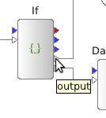
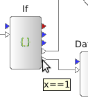
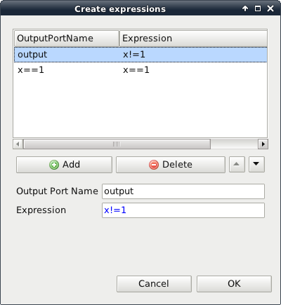

This actor allows different paths to be taken in the workflow depending on logical expressions. As an example see the "if_example.moml" workflow in workflows/examples:

The output port have different names which can be visualised by hoovering the mouse pointer over the ports:
 
The different output ports of the if actor are attributed different expressions. These expressions are visualised in the actor attributes view:
In this example the port 'output' is used if x!=1 and the port 'x==1' is used if x==1. The number of output ports and their expressions can be edited using the 'Create expressions' dialog:
NOTE! There must always be one port called 'output'.